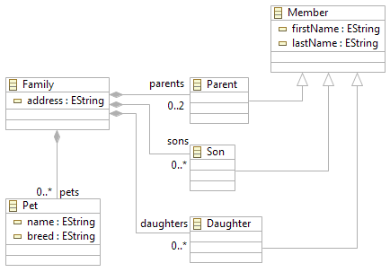
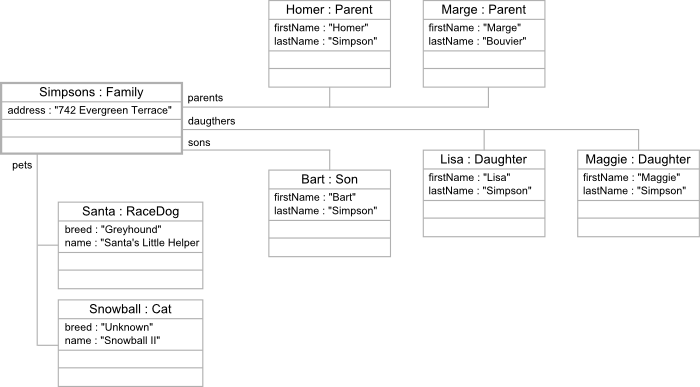

To illustrate EMF-REST we will use a simple example to represent families and we will use the Simpsons family (everyone knows the Simpsons!) as instance to play with.
We will use a simple Ecore model to represent families. The main concepts of our Ecore model are shown in the following figure:
As you can see, the Family concept has only one attribute (i.e., address) to represent the address of the family and references for the members (i.e., Member concept), including parents, sons and daughters; and pets (i.e., Pet concept) of the family. The members of the family are represented by the corresponding concepts, that is, Parents, Sons and Daughters.
To play a bit with hierarchies, we allow for different types of pets, which include Dogs and/or Cats. Furthermore, a dog can also be a RaceDog or a HuntingDog. The following figure shows these concepts.
Using the previous model as input, EMF-REST is able to generate the REST API for creating and managing instances of its concepts.
In this example we will use the Simpsons family to illustrate how to use the generated API. The following figure shows the Simpsons family which is accessible and modifiable by the generated REST API:
The generated API allows us to navigate through the Simpsons family elements by using REST calls whose format mimics the structure of the family model. For the sake of simplicity, let's imagine that the Simpson family is already in the server, so we will first perform read calls to the API (we will show how to modify its elements afterwards).
Using the generated API we can query the model by means of calls such as:
GET http://<server>/<project>/app/Family/Simpsons
Which will return us the following JSON including all the elements of our model:
{
"address": "742 Evergreen Terrace"
}
We can also set the level of detail of the returned JSON by using the depth parameter. For instance, the call:
GET http://<server>/app/Family/21
will return the following JSON:
{
"address": "742 Evergreen Terrace",
"parents": [
{
"firstName": "Homer",
"lastName": "Simpson"
},
{
"firstName": "Marge",
"lastName": "Bouvier"
}
],
"sons": [
{
"firstName": "Bart",
"lastName": "Simpson"
}
],
"daughters": [
{
"firstName": "Lisa",
"lastName": "Simpson"
}
],
"pets": {
"Dog": [
],
"Cat": [
{
"name": "Snowball II",
"breed": "Unknown"
}
],
"RaceDog": [
{
"name": "Santa's Little Helper",
"breed": "Greyhound"
}
],
"HuntingDog": [
]
}
}